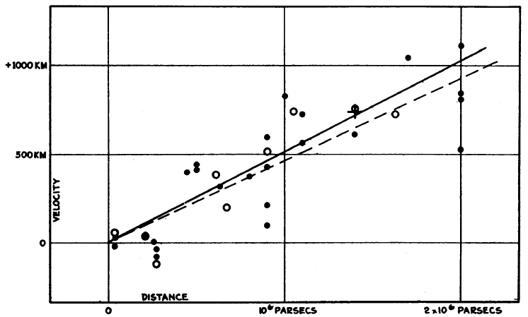

The first observational evidence that the Universe is expanding was found by Edwin Hubble (Hubble 1929Hubble, Edwin. 1929. “A Relation between Distance and Radial Velocity among Extra-Galactic Nebulae.” Proceedings of the National Academy of Science 15 (March): 168–73. https://doi.org/10.1073/pnas.15.3.168.). By measuring the distances to nearby galaxies using the Cepheid Leavitt Law1 The Cepheid Leavitt Law was previously known as the Cepheid Period-Luminosity relation. The relation between a Cepheid’s period of pulsation and its absolute magnitude was first discovered by Henrietta Leavitt (Leavitt and Pickering 1912Leavitt, Henrietta S., and Edward C. Pickering. 1912. “Periods of 25 Variable Stars in the Small Magellanic Cloud.” Harvard College Observatory Circular 173 (March): 1–3.). However, as a woman working in the early 20\(^{th}\) century, she didn’t receive credit for her work. In 2009, the International Astronomical Union passed a resolution to change the name of the Period-Luminosity relation to the Leavitt Law in recognition of her fundamental discovery., and comparing these distances to the galaxies’ redshifts. Hubble measured the expansion rate of the Universe (the Hubble constant, \(\mathbf{H_0}\)) to be approximately 500 km s\(^{-1}\) Mpc\(^{-1}\). Hubble’s observations are shown in Figure 1.3. Throughout this course we will explore how observations of the Universe have developed over the past century, increasing in precision and accuracy, leading to our current understanding of Cosmology.
Figure 1.3: The first observational evidence of the expanding Universe. His first measurement of the expansion rate, now known as the Hubble constant, was 500 km s\(^{-1}\) Mpc\(^{-1}\). From (Hubble 1929Hubble, Edwin. 1929. “A Relation between Distance and Radial Velocity among Extra-Galactic Nebulae.” Proceedings of the National Academy of Science 15 (March): 168–73. https://doi.org/10.1073/pnas.15.3.168.).
